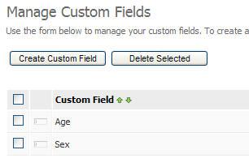
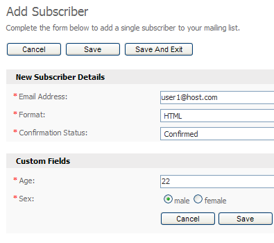
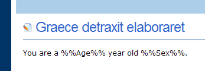
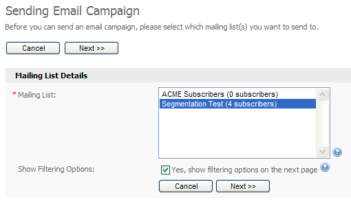
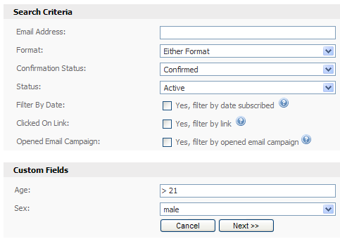

In this brief tutorial you'll learn how to setup a mailing list with custom fields to collect the age and sex of your subscribers when they signup. After that you'll learn how to segment your mailing list and only send your email campaign to males over the age of 21.
Creating your mailing list with custom fields
To get started, create a mailing list. Click on the "Manage Custom Fields" menu option under the "Mailing Lists" tab and create two custom fields:
Age: Make this a required number field.
Sex: Make this a required radio button field with two options: male and female.

Create two custom fields: age and sex before moving on.
Import/add subscribers
Choose how you want to add some subscribers to your mailing list. For this example we will use the "Add Subscriber" option under the "Subscribers" tab to manually add a few subscribers:

For this example we will manually add a few subscribers to our mailing list, being sure to add a variety of age ranges (for example, 15, 21, 22, 25 and 40) and sexes.
Creating the email campaign
Create a basic email campaign. You can add any content you want. I started with the built in business template and added some content using the custom field placeholders. If you want to add a custom field into your email, click the "Insert Custom Field" link under the editor.

Create an email campaign - it doesn't matter what you type for the content of the email as this is for testing purposes only.
Sending and segmenting the campaign
Click the "Send Email Campaign" option under the "Email Campaigns" tab at the top of the system. Choose the mailing list you want to send to, and make sure you tick the "Yes, show filtering options on the next page" option as this is where we will segment the list.

The first step of segmenting and then sending our email campaign.
On the next step we can segment and filter our mailing list, telling the system to only send to subscribers who match certain details. In our example we only want to send to males over 21, so we fill out the custom field filtering options. You can use powerful filtering options on number fields as you can see below.

Segmenting our subscriber list using filter options.
We have chosen to only send to males over 21. The "> 21" text in the age field takes care of the age segmenting for us automatically. Click the "Next >>" button to continue and complete the rest of the sending steps as normal. The email will only be sent to male subscribers over the age of 21.